Mr World-Wides
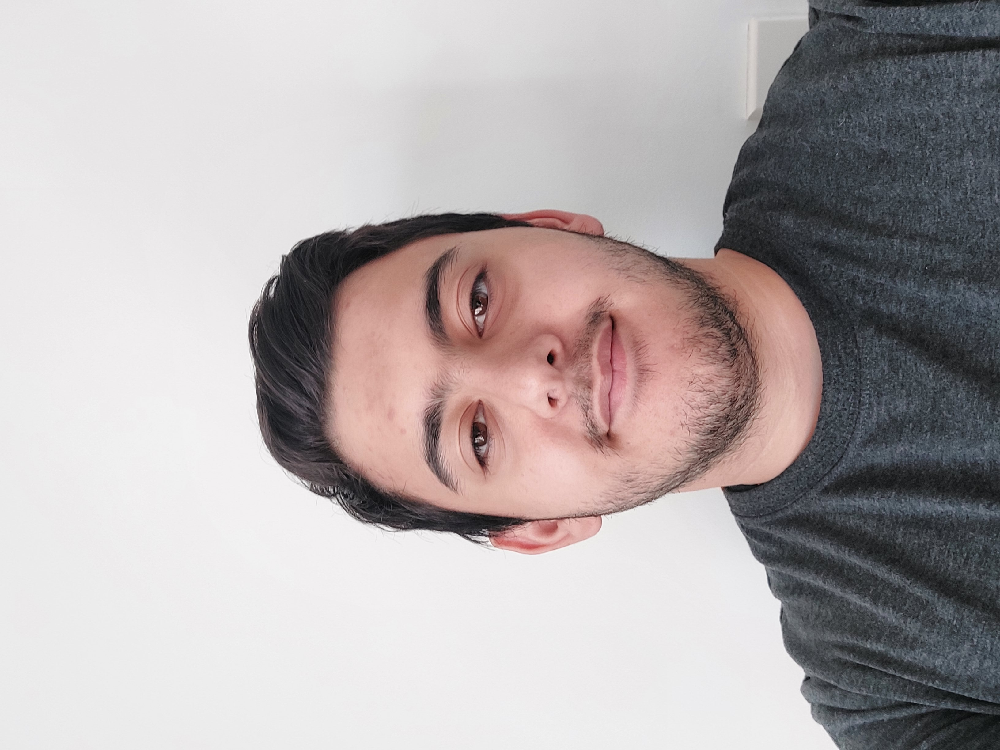
Yusuf Akyavas
Hello! My name is Yusuf Akyavas, and I am a current student in the Bachelor of Information Technology course at RMIT. I was born in Australia from two Turkish parents. I have two older brothers and we all speak both English and Turkish together, it varies from time to time. I went to a private school called Sirius College and spent my entire primary and secondary education there and graduated with a year 12 Certificate. I really enjoy playing video games and other tabletop games as well. The type of video games I play varies but I mostly enjoy playing cooperative games in which I can play with friends because I believe that experiences with other people are much more enjoyable than on your own. I also have two cats. Their names are Kestane which translates to “chestnut” in Turkish and Kimba which is from “Kimba The White Lion”(He is a white cat). My interest in IT started since a young age. My brothers are a lot older than me and so they had access to technology and devices which I did not. I would always enjoy watching them play a game and began wondering why it worked that way. As I got older I started to try and understand how changing something in the code changes the games or websites experience, but I was never fully invested. I only started getting really interested in the past few years as a result of the Covid-19 lockdown and I was spending more time on the computer. This led to wanting to go to university with a bachelors or Information Technology. I chose to go to RMIT as it was the university that my oldest brother had gone to for his education in IT and he taught me about IT. It was also the easiest to go to as the other universities were very far away. From this IT course I hopefully will learn a broad range of knowledge which I can apply to my career and personal life and use the skills gained to help people in the field of IT. I would like to continually learn and grow and develop my IT skills for use in the future.
Myers-Briggs
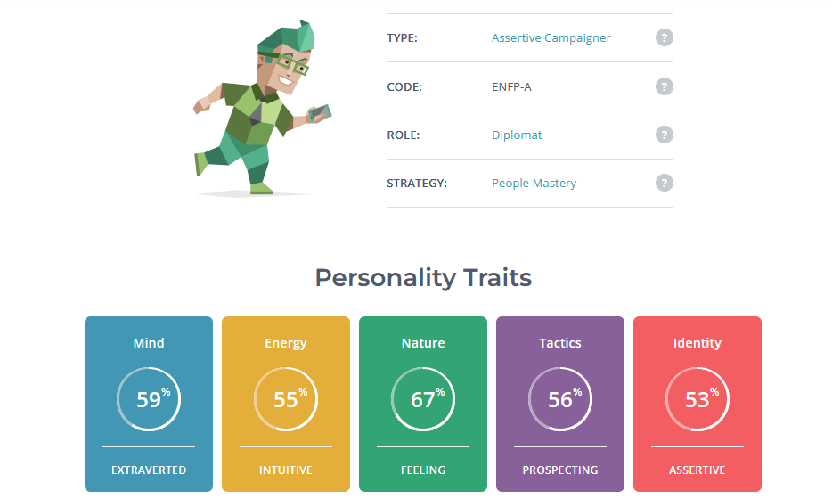Learning Style
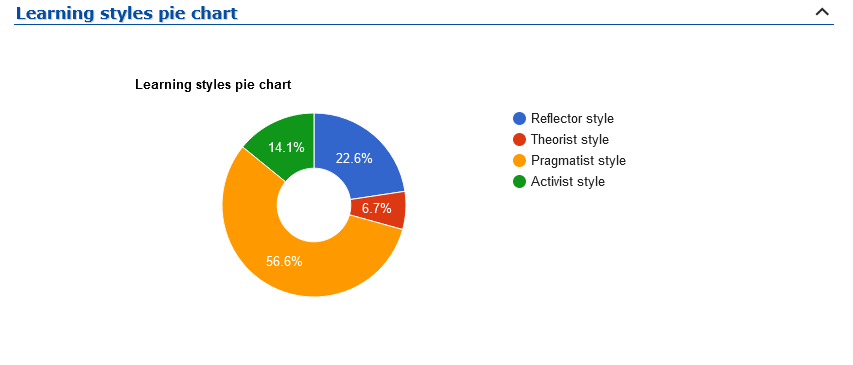Big Five Test
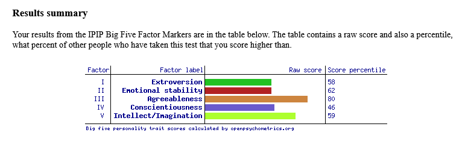
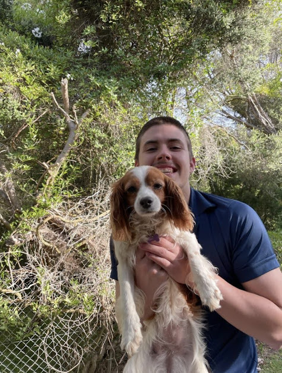
Hamish Dean-Graham S3932237
My full name Is Hamish Dean-Graham with my student number being s3932237, I have lived in Australia my entire life and have a deep interest in technology mainly being backend and legacy applications. My hobbies include messing with old computers, gym and baking. I am interested in IT because I grew up around it constantly and for experience, I have been working in the industry for the past two years as a DevOp intern which then transitioned to a operational engineer grad. I am part of the sickest dudes. IT appeals to me is because of how much I have been exposed to it. My family founded a Telecommunications billing software development company, and for the past 2 years I have been working there as a "Devops Intern" which then transitioned into "Operational engineer grad" So I have been extremely lucky to already be included into the field of IT and experience what the industry is like. After seeing many people at the company I work at come from RMIT with lots of valuable skills not only with the software but communication/business skills I decided to transfer from my Swinburne computer science course to IT in RMIT. Especially with classes going back on campus I am excited to have a full university experience and hope to bring my extroverted nature into my IT work.
Myers-Briggs
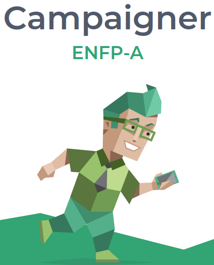Learning style-test
matrix.edu.aulabelled as a physical learner
"You're a physical learner! You prefer to use your body, hands and touch to learn new material. You need to apply the information and make it your own by making something, role-playing or practicing the technique/skill. You often memorise material when walking and observing, you like to engage in 'hands on' and interactive activities, and learn through doing. "
Creativity test
56/100 on creativity
- Risk: 23/26
- Curiosity: 13/24
- Complexity: 11/26
- Imagination: 9/24
- Overall score: 56/100
Jet Cronin
I am a recent highschool graduate from Albert Park College from which I graduated in 2021, my studies focused on the sciences and music. I have lived in Melbourne, Australia my whole life but have traveled around Europe and some parts of Asia but am only able to speak English. I have interests in music and have a background with music production and the music industry but my passion for music lies with the metal scene with much of my time spent searching for new bands to listen to. I also have a deep appreciation for the sciences, specifically astronomy and I always enjoy keeping up to date with the latest studies and papers surrounding this topic. My interest in IT began when I was exposed to music production and the technology used. I was intrigued by the way the devices communicated to each other and how each plugin worked and learned how AI is used to produce effects and its uses in things like autotune. This progressed into researching AI in the music industry and its progression with many recent machine learning and AI programs being developed to produce its own music though this is still in its infancy. With my interest in space I was also intrigued by how astronomers research the universe and have interest in the systems used to discover and catalog extra terrestrial bodies using AI and machine learning. Despite being interested in these systems I have little IT experience outside of basic research. My decision to come to RMIT was influenced by my family as some recommended that RMIT was the university that was best suited for me. I started looking into RMIT’s astrophysics course during an open day but found myself drawn towards the computer science and IT departments and decided to further look into what I would learn through the IT related courses. I was impressed by the environment in RMIT and was encouraged to go by those around me to pursue an education here. During my studies I hope to develop the skills and understanding in security systems, AI and machine learning and expand my knowledge with IT systems. I wish to understand how AI and machine learning systems are developed and how they are influencing how we use computers. I want to understand security systems further and develop an understanding of the importance of such systems.
Myers-Briggs
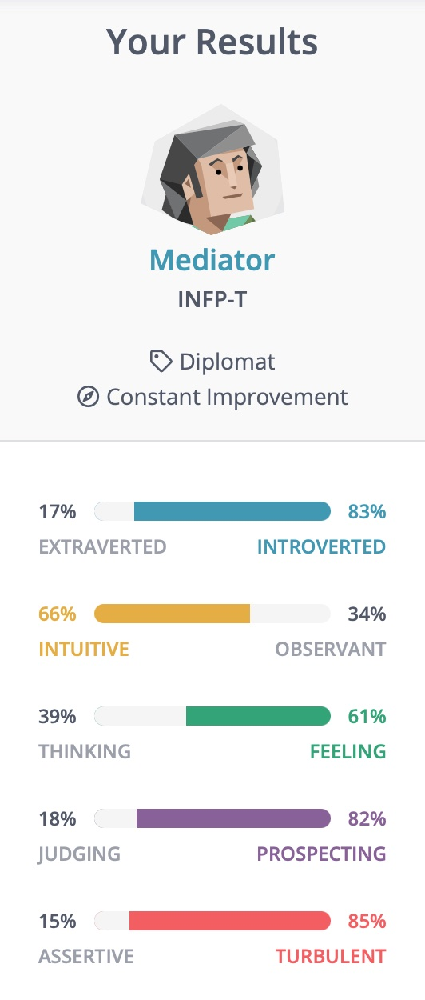Learning Style
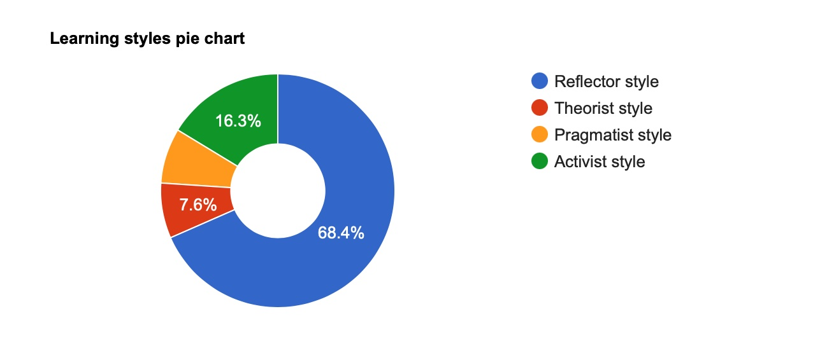Big Five Test
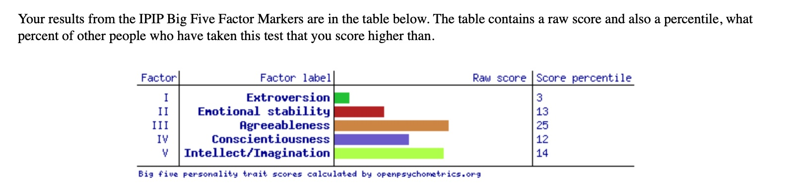
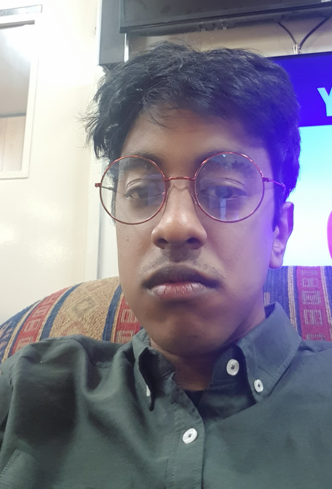
Shivam (Oliver) Raju
Hi, I'm Shivam [s3953555(@student.rmit.edu.au)]! I come straight from CDSC (Carrum Downs Secondary College) doing my VCE in music, media, software development, and math. My family comes from Fiji with Indian heritage but I myself was born in Australia. I’m fascinated by the social scene surrounding music rhythm games and it’s basically all I immerse myself in outside of responsibilities like school and general living. I’m not that interesting of an individual as I don’t pursue much but the things I do indulge in bring me great joy and the only thing I could want is to be able to express my joy and sentiment to others! I try and do this through amateur photography and music production and I’m having a great time having fun. I’m super interested in computer vision technologies like photogrammetry, volumetric capture, object recognition and other fields like sustainable computing and low end/retro systems. I think it’s very important to retain the idea that computer systems are just an extension and a tool for people to use and this sentiment was very clearly conveyed with older retro technologies. I got interested in IT from a very young age - we didn’t get internet in our household until midway through my year 10 (2019) and I lived very far away from my friends, so I killed most of my time by watching TV and messing with a laptop. You can't do much with a laptop without internet and so I tried to find new things to do locally every day, this in me reading the offline manuals for windows and built-in software though - and through that I just became knowledgeable on computer systems and became the “computer guy!” The most thorough experience I have is my Applied Computing and Software Development classes for my high school VCE, I learned a lot about Visual Basic and .NET technologies. In my own home though, I like to experiment a lot with the things I have laying around, like old game consoles or anything slow that I think get a lil’ bit more out of. I have some experience in bootleg networking as I host my own web server at home! I’m not too confident in networking as it’s an entire beast but I do have DD-WRT on my router (custom firmware) and I managed to get my home server point to a public domain. I also run arch linux at home and that just brings its own maintenance headaches alongside it, but I think it’s a very fun project. I wanted to go to RMIT because of a couple different factors. Most IT/CS degrees are alike, but RMIT was the only one that stood out from the others, the third year of the degree offers industry experience and that seems like a valuable opportunity! The campus and community here were really alluring and being from the suburbs, I wanted to experience the hustle and bustle of the city, there’s just so much here! I’m finding niche communities that I could never see or expect from my local area. IT is such a broad field and there’s just so many smaller sections inside of it, so I expect to learn about just how many different fields are related to IT. I want to get really experienced with computing and problem solving and see how others from the past have tackled problems. I want to see what the industry is currently trying to achieve and how it’s taking the steps to solve those problems
Myers-Briggs
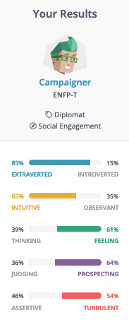Learning Style
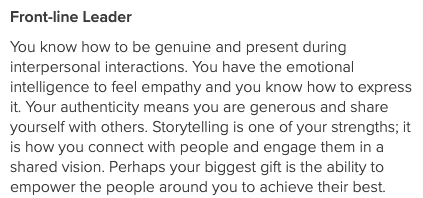Big Five Test
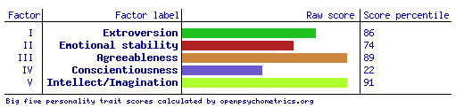
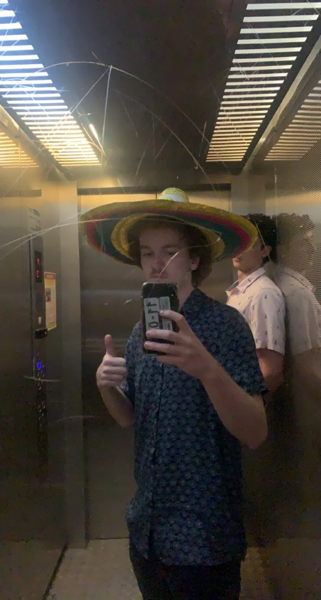
Nick Heeps
Hey, my name is Nick. My student number is s3944165. I am a new student here at RMIT and I’m currently studying for the Bachelor of Information technology, and I am on campus 4 days a week (Monday, Tuesday, Wednesday, and Friday). Even though my whole extended family lives in Melbourne I only moved here this year. I originally lived on a farm just outside a small town called Barnawartha. I have a lot of hobbies, but my main ones are building computers, gaming, and listening to music. My interest in IT began when I got my first PC in 2016 for my birthday. Ever since then I have had a strong interest in the physical and hardware side of IT. I’ve had a medium amount of IT experience, both within school and outside of school. In year 10 and year 11, I undertook data analysis and computing as an early start year 12 subject. I also participated in work experience at MARS Petcare where I worked with the IT department for two weeks handling small tasks and jobs so I could get an idea of what it was like to work in the IT field. I chose to come to RMIT because of the extensive and well-structured IT and computing courses that they had in place, allowing for me to pursue my interest in IT no matter what ATAR I got after leaving school. I expect to learn all about the different areas of IT throughout my course, not only to help me find a job when I’m older but to also build on my skills to use in everyday life.
Myers-Briggs
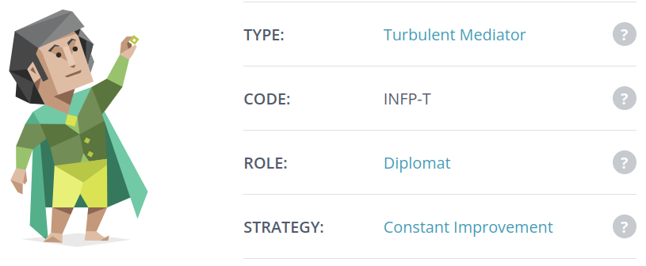Learning Style
Big Five Test
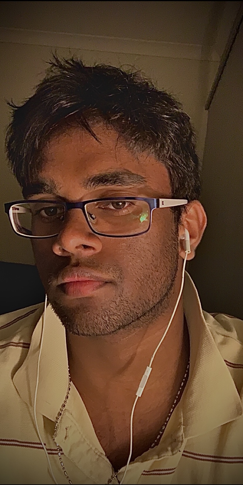
Aaron Schokman
My full name is Aaron Denham Romel Schokman. I am a first year at RMIT currently studying a Bachelor of Information Technology (IT). I originally moved to Australia from Sri Lanka around 6 years ago (I was 13 years old at the time). When I moved to Australia, I studied for 2 years in Westall Secondary College, and then moved to Lighthouse Christian College in Keysborough (where I currently live). I graduated from year 12 VCE last year (2021) and am currently pursuing a career in Software and Systems engineering. I enjoy gaming as a past time, I’ve been a gamer ever since I was 6 years old. While I was a gamer, I also enjoyed Basketball and Swimming, and became very successful competing against other schools and clubs and winning multiple awards and trophies along the way. My reason to pursue the IT industry is because I’ve always had a passion towards computers and what helped them run and complete such complex tasks, which was further ignited by my passion for gaming. Alongside gaming, I used to work for McDonalds during my Highschool days, but once I graduated from VCE, I worked on the maintenance team of my alma mater (Lighthouse Christian College), I only worked on the maintenance team for a few days, but I gained invaluable experience in that field. Once I found another job at Premier Auto Trade (PAT) I worked there for a good three months during the Christmas break. My interest in IT is to be able to program and create a unique perspective into the world of Technology for myself, as well as others in areas such as game design or game programming. My interest in IT began when I played my first game of Call of Duty when I was 6 years old, and as a kid I have always wondered how a video game was created and what the inner workings of a video game are. Supposedly that interest in how a video game runs has carried on throughout my life. At the time, most of my uncles and cousins were enthusiastic gamers too, my passion for video games came from them, but my interest of the inner workings of a video game is purely my own.